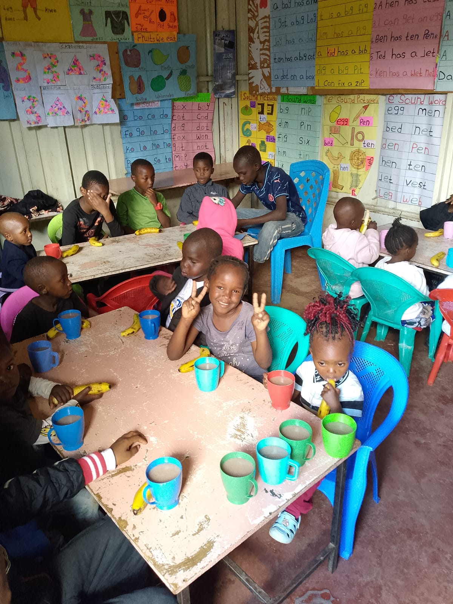

Heart of Compassion Kenya Community-Based Organization (CBO), located in Roysambu, Nairobi County, is dedicated to transforming the lives of vulnerable children, youth, and women in Roysambu and beyond.
Our holistic interventions range from education support and essential support to economic opportunities, life skills, and advocacy — targeting needy children, disadvantaged youth, and unstable mothers.
We work in partnership with communities, institutions, and local government using participatory methods to build resilient, empowered, and self-reliant communities, locally and internationally.
From a church response to the pandemic, to a registered community organization.
Members of Word Chapel church see families around Roysambu unable to keep their children in school.
A church-led initiative begins paying school fees, enabling over 15 children to return to school.
Heart of Compassion is officially registered as a Community-Based Organization, widening its reach.
We continue empowering vulnerable children, youth, and women across Roysambu and beyond.

To empower vulnerable children, youth, and women through education, essential support, and economic opportunities, while promoting inclusive community development.

A resilient, empowered community where every child, youth, and woman has access to education, economic opportunities, and holistic well-being.
The principles that guide everything we do.
Guided by Christian principles in all we do.
Striving for the highest standards in service delivery.
Building trust with honesty, accountability, and transparency.
Working together with unity and shared purpose.